# 遥感数据的特征
# 数据特征
多源性：多平台，多波段，多极化，多时相，多角度，多尺度......
遥感数据是"多维的"，这种多维性可用通过不同的波段，分辨率，数据类型等特性来体现，度量和描述。
遥感利用电磁波采集目标信息，并以数据形式记录电磁波信号的强度（辐射亮度），因此，遥感数据包含了目标的电磁波特性。
遥感数据可用数学方式表达为：
波长，空间位置s，时间t，观测方向和偏振状态p的函数
若固定其他参数，而变化某一特征时，就得到在相应特征维上展开的遥感数据子集。
# 空间分辨率及空间特征
空间分辨率：针对遥感器或图像而言的，指图像上能够详细 区分的最小单元的尺寸或大小；
地面分辨率：针对地面而言， 指可以识别的最小地面距离或最小目标物的大小。
在应用上的意义：
- 空间分辨率高——划分地物越细，识别地物细节 能力强。
- 不一定是空间分辨率越高越好，地物细节信息太 多有的时候会影响主要信息的识别与提取，因此要根据应用的特定目的选择合适的空间分辨率。不同的研 究目标、尺度需要相应的数据。
几点说明：
图形的可分辨率程度，不完全决定于空间分辨率的具体值，而与目标的形状，大小，以及它与周围物体亮度，结构的相对差异有关；
遥感数据是对地面信息源有限化，离散化的记录，离散化过程必然要损失部分信息（概况过程），这从另一个角度说也体现了遥感数据的概况能力
不同遥感器的成像方式和机理不同，图形的几何畸变不同，构成遥感图形不同的几何特征
遥感数据的空间特征（像元间灰度差异所反映的地物边界、形状、大小、纹理等），是遥感图像上最直观、最基础的信息； 可通过目视解译或数字图像处理（边缘提取、纹理结构分析等），进行识别、提取。
# 光谱分辨率及光谱特征
电磁波谱是按电磁波在真空中的波长或频率来划分的。不同电磁谱段与物质的相互作用有很大差异.因此设计不同谱段遥感器来采集信息。
遥感系统的电磁波谱：
光学波段——包含反射波段和发射波段
- 反射波段：遥感器主要接收来自太阳辐射和地面物体的反射辐射的 能量,包括 UV（0.3-0.38μm）、VIS（0.38-0.76μm）、NIR（0.76- 1.3μm）、SWIR （ 1.3-3μm）、MIR （3-6μm）
- 其中的紫外—近红外波段（0.3-0.9μm）又称摄影波段；
- 发射波段：遥感器主要 接收来自地面物体自身的 发射辐射的能量。 包括 中红外MIR（3-6μm）热红外（TIR：8-14μm）
其中6.0-8.0μm 因水汽强吸收 遥感无法利用。
微波
遥感常用 0.8～ 30cm， 波段Ka、K、Ku、X、C、S、L、P
光谱分辨率
# 时间分辨率及时间特征
遥感探测器按一定的时间周期重复采集数据，这种重复周期， 又称回归（重访）周期。它是由飞行器的轨道高度、轨道倾角、 运行周期、平台设计以及轨道间隔、偏移系数等参数所决定。
如，陆地卫星( Landsat)，重复观测周期为16天；气象卫星（NOAA）重复周期为1/2天。在双星系统下，同一地点每天有 4次过境资料；静止气象卫量，采用与地球同步轨道，对同一 地点每隔20-30分钟可获得一次观测资料。
时间分辨率：指遥感器重复观测的最小时间间隔。
时间分辨率的意义：动态监测，时序分析；提高遥感分类识别能力
时间分辨率的大小，除了主要决定于飞行器的回归周期外，还与遥感探测器、遥感系统的设计等因素直接相关（如：卫星测摆等）。 另外，和纬度有关系。
# 辐射分辨率及辐射测量特性
遥感器的模拟电信号——经过A/D模数转换器（抽样，量化）——数据值（DN--Digital Number），用不同bit记录。
辐射分辨率 ： 指遥感器探测目标光谱信号强弱的敏感程度、区分能力（能分辨的最小辐射度差），即探测器的灵敏度。
指传感器（数据）能够区分的最小辐射差异的能力，或指对两个不同辐射源的辐射量的分辨能力。
辐射分辨率可以用灰度的分级数来体现（量化级数）。
光学载荷辐射分辨率通常用噪声等效反射率 或噪声等效辐亮度表示。
如 以前的黑白图像常以4 bits（取值范围0-16）记录反射辐射值； Landsat/ TM 1-5、7波段的数据用8 bits ()记录,取值范围0 – 255 ，QB图像用16 bits记录，取值范围216
# 遥感信息
通过显示遥感图形可用获取以下信息：
图像的外观：建筑物，道路，水体，河流等
像元大小：空间分辨率或像元尺寸
空间分辨率和像元尺寸是有所区别的，一般情况两者的是相同的。但是由于图像本身的可用重采样，这样会像元尺寸会发生变换，对于其原来的空间分辨率就变得模糊，两个就不相同了。
量化等级：8bit，16bit，32bit
地理坐标
灰度值（DN值）
直方图
均值，方差
.....
通过图像的头文件，还可以获得图像更多的信息：
卫星，传感器类型
处理时间
成像时间
产品级别
太阳高度角，方位角
中心点坐标
图像增益和偏置
.......
# 国内外主要卫星/传感器介绍
# Landsat Series
美国
- Landsat1 (1972)
- Landsat2（1975）
- Landsat3（1978）
- Landsat4（1982）
- Landsat5（1985）
- Landsat6（1993）
- Landsat7（1999）
- Landsat8（2013）
- Landsat9（2021）
传感器
TM
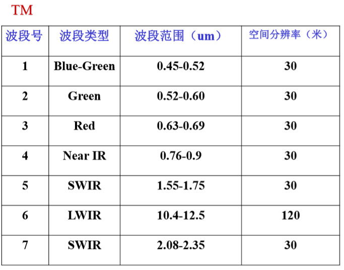ETM+
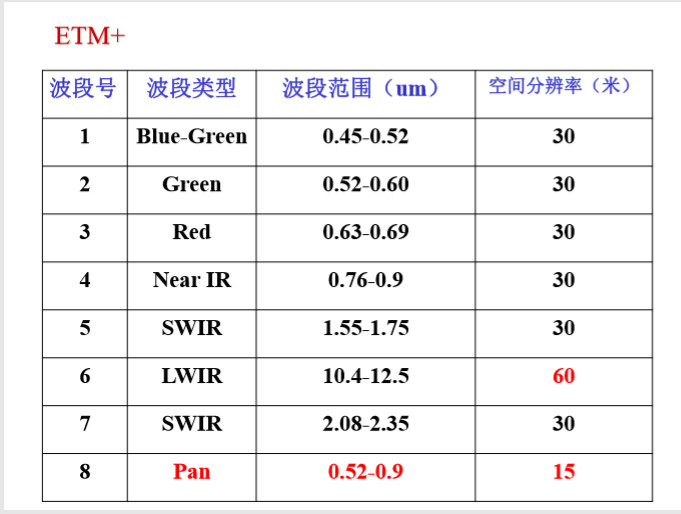OLI
陆地成像仪，9个光谱波段，包括8个多光谱波段和1个全色波段。空间分辨率为30m；全色可见光波段的空间分辨率为15m 。
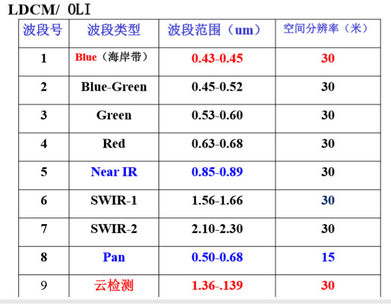OLI与ETM+相比较
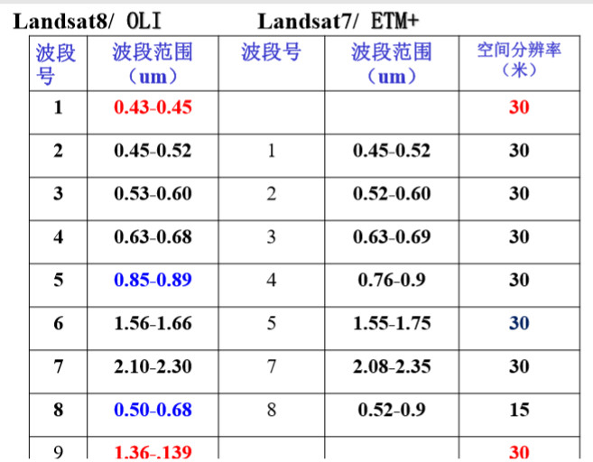TIRS
热红外传感器，两个光谱波段，10.30～12.50um，空间分辨率100m。

TIRS与ETM+比较

# SPOT Series
法国
SPOT1（1986）MS:20m，PAN:10m
SPOT2（1990）MS:20m，PAN:10m
SPOT3（1993）MS:20m，PAN:10m
SPOT4（1998）MS:20m，PAN:10m
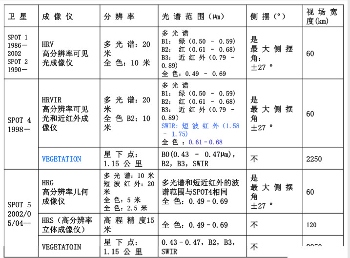SPOT5（2002）MS:10m，PAN:2.5/5m
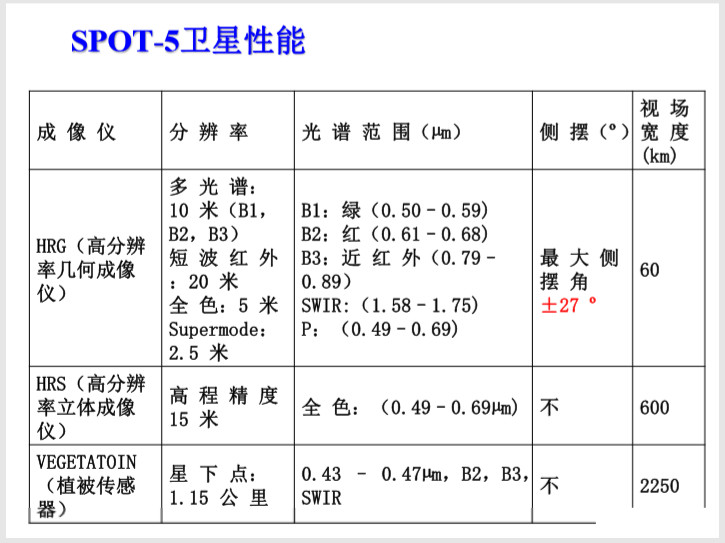SPOT6（2012）MS:6m，PAN:1.5m
SPOT7（2014）MS:6m，PAN:1.5m
# Quickbird
快鸟
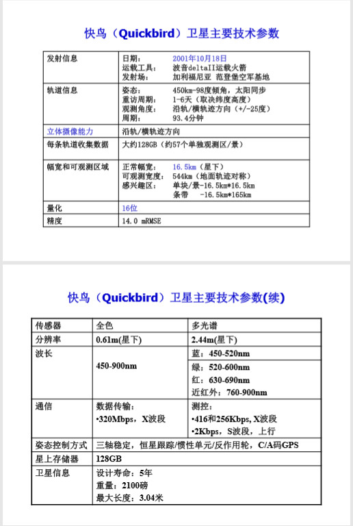# GEOEYE
美国GeoEys公司于2008年9月6日发射升空，是IKONOS卫星的升级换代产品。目前空间分辨率最高的民用卫星之一。
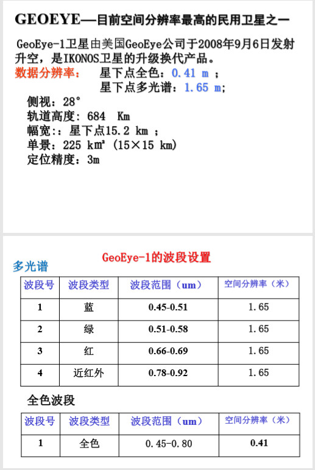 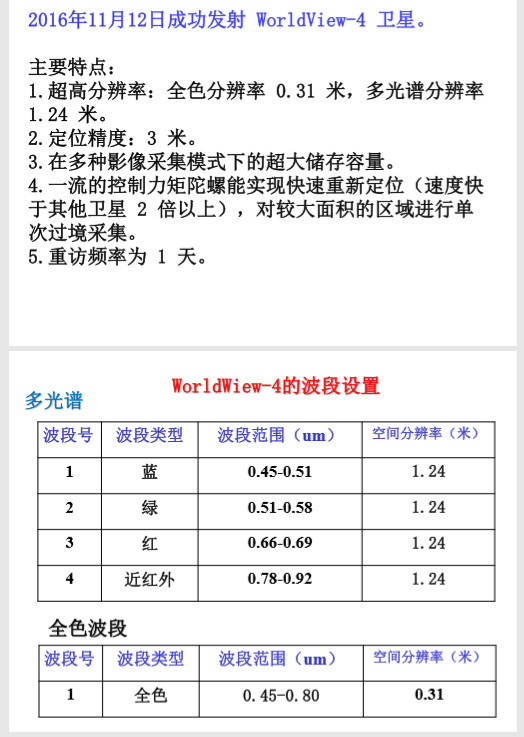# WorldView Series

# Sentinel Series
由欧洲委员会投资，欧洲航天局（ESA）研制。“哨兵”系列卫星主要包括2颗哨兵－1卫星、2颗哨兵－2卫星、2颗哨兵－3卫星、2颗哨兵－4载荷、2颗哨兵－5载荷、1颗哨兵－5的先导星——哨兵－5P，以及1颗哨兵－6卫星等。
可在 https://scihub.copernicus.eu/dhus/#/home 免费下载
常用1A和2A
- 哨兵-1A
- 哨兵-2A
- 哨兵-3A
- 哨兵-4A
- 哨兵-5
- 哨兵-5P
- 哨兵-6
# MODIS
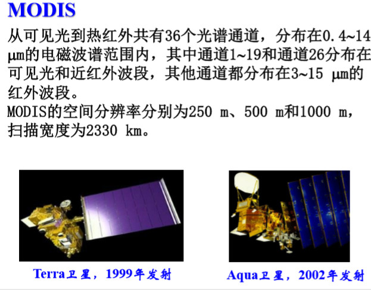MODIS准确表达其实是传感器，但是一般我们也称MODIS影像
- 波段信息
数据产品
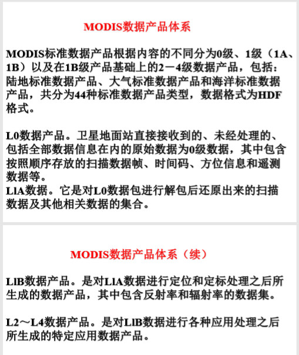 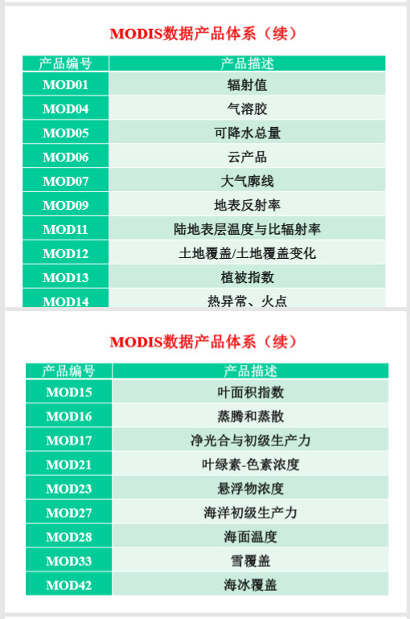
# RADARSAT Series
- RADARSAT-1
- RADARSAT-2
# CBERS Series
- CBERS-1/01/02/02B
# HJ Series
# GF Series
# 对象特征
# 空间分布特性
任何地学研究均有一定的空间分布特征。按其平面形态，可分为：
点状，线状，面状；可用空间位置，大小，形态和空间关系，来去欸但那个地物的空间分布特征；并可以通过数字形式来表示。
- 点状：由其实际位置或中心位置的一对（x,y）坐标确；
- 线状：由线性形迹的一组（x,y）坐标对 确定；
- 面状：由构成它的一组界线的坐标对来确定，并可相应 地求得其大小和形状参数；
- 大小：目标的面积（S）；
- 形状参数：可用来确定（L为周长）等不同方 法确定。波谱反射与辐射特性
# 地物波谱特性
地物的反射，吸收，反射电磁波的特征随波长而变化，人们以波谱曲线的形式表示地物波谱特性，即地物波谱。
地物波谱可以通过各种光谱测量仪器测得
绿色植被
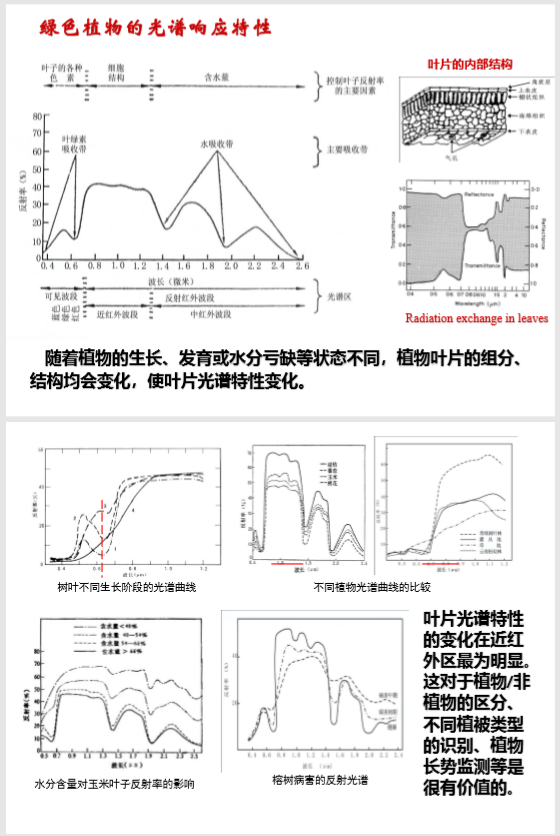红边位移
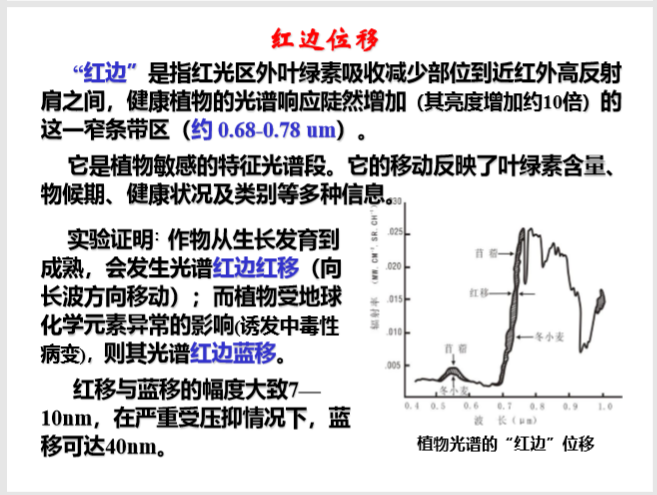植物波谱特性的影响因素
土壤
水体